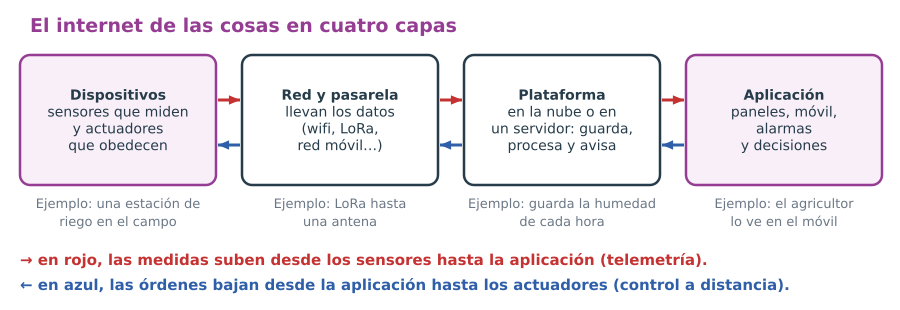
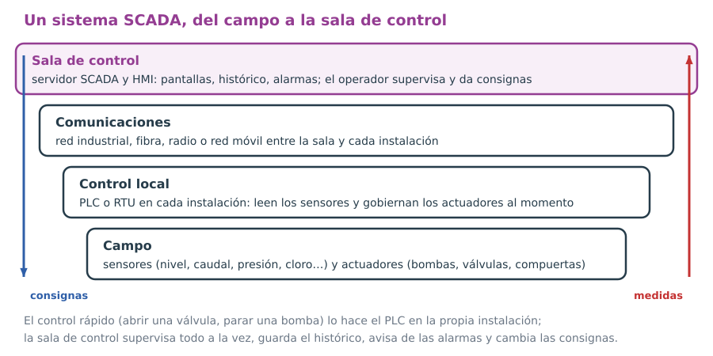
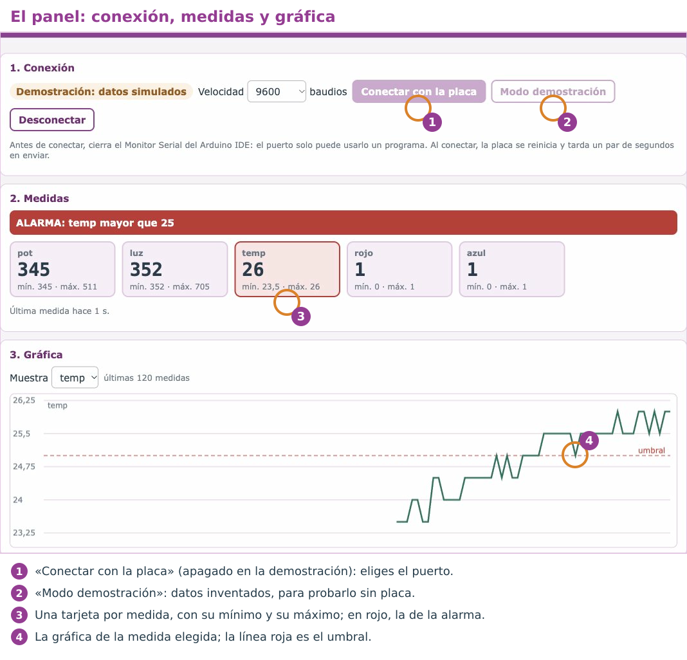
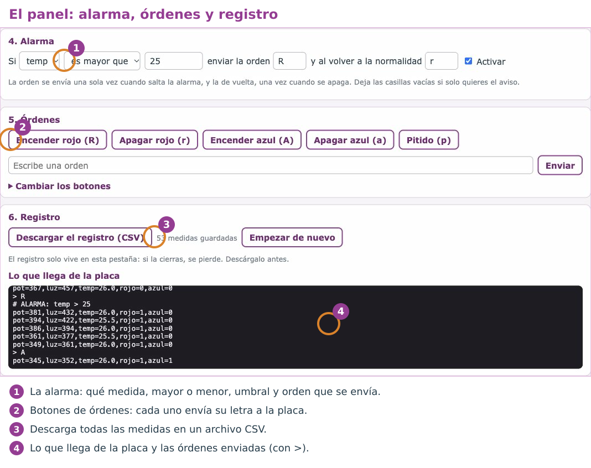

Qué vas a conseguir en esta página
Entender qué es el internet de las cosas y cómo está organizado, qué es la telemetría y cómo supervisa una empresa sus instalaciones con un sistema SCADA. Lo comprobarás con tu propia placa: sus medidas viajarán por el cable USB hasta un panel en el navegador, desde el que también podrás darle órdenes, como en una sala de control a pequeña escala.
Cómo se trabaja esta página
Esta página tiene dos partes. La primera, del internet de las cosas al SCADA, la lees en casa antes de la clase, con sus ejercicios «Ahora tú». La clase es para la segunda, desde «Tu sala de control»: el panel de telemetría, la práctica y la tarea TE1, que necesitan la placa.
El internet de las cosas
El internet de las cosas (en inglés Internet of Things, IoT) es la conexión a internet de objetos que no son ordenadores: un contador de agua, un contenedor de basura, una farola, un termostato o el sensor de humedad de un olivar. Cada objeto mide algo o actúa sobre algo, envía sus datos y recibe órdenes a distancia, sin que nadie tenga que acercarse a él.
Aunque cada sistema es distinto, casi todos se organizan en las mismas cuatro capas:

| Capa | Qué hace | En tu montaje de esta página |
|---|---|---|
| Dispositivos | Los sensores miden y los actuadores obedecen. Suelen ser placas pequeñas, como la tuya. | El Arduino con el shield. |
| Red y pasarela | Llevan los datos con alguna de las redes de la página 8. Comunicación serie y redes de dispositivos. La pasarela traduce de una red a otra (por ejemplo, de LoRa a internet). | El cable USB. |
| Plataforma | En la nube o en un servidor propio: guarda el histórico, hace cálculos y decide cuándo avisar. | El registro del panel. |
| Aplicación | Lo que ven y usan las personas: paneles, aplicaciones del móvil, avisos. | El panel en el navegador. |
El IoT, en cinco ejemplos
- Agricultura: sensores de humedad del suelo que deciden cuándo regar y cuánto, para gastar menos agua.
- Ciudad: plazas de aparcamiento que avisan de si están libres, contenedores que avisan cuando están llenos y farolas que se regulan solas.
- Industria: sensores de vibración en los motores que avisan antes de que se averíen (mantenimiento predictivo).
- Hogar: termostatos, enchufes y persianas que se manejan desde el móvil.
- Salud y deporte: pulseras que miden las pulsaciones y el sueño.
La otra cara: seguridad y privacidad
Cada objeto conectado es una puerta más a internet, y muchos se fabrican baratos y no se actualizan nunca. En 2016, la red de programas maliciosos Mirai tomó el control de cientos de miles de cámaras y routers que seguían con la contraseña de fábrica y los usó para atacar a la vez a empresas de internet, hasta dejar sin servicio durante horas a webs muy conocidas. Además, los datos que recogen (cuándo hay alguien en casa, cuánto se mueve una persona) dicen mucho de nosotros.
Por eso la Unión Europea aprobó el Reglamento de Ciberresiliencia (Reglamento (UE) 2024/2847). Obliga a los fabricantes de productos conectados a venderlos con una configuración segura por defecto, a corregir sus fallos de seguridad y a dar actualizaciones gratuitas durante un periodo de soporte, en general de al menos cinco años. Sus obligaciones entran en vigor poco a poco: el aviso de fallos que se estén aprovechando ya es obligatorio y casi todo lo demás lo será desde finales de 2027. Como usuario, lo básico es cambiar siempre la contraseña de fábrica y actualizar los aparatos.
Telemetría: medir a distancia
Telemetría significa «medida a distancia»: un sistema mide en un sitio y envía las medidas a otro para vigilarlas. La usan los equipos de Fórmula 1 (cientos de sensores del coche llegan al box durante la carrera), los satélites, las estaciones meteorológicas o los contadores de agua y de luz que ya no hay que ir a leer. En un sistema de telemetría hay que decidir cuatro cosas:
| Decisión | Qué significa | Ejemplo |
|---|---|---|
| Muestreo | Cada cuánto se mide y se envía. | La temperatura de un aula, cada minuto; la vibración de un motor, mil veces por segundo. |
| Marca de tiempo | Cada medida se guarda con la hora a la que se tomó. | Para saber cuándo empezó a subir la temperatura. |
| Histórico | Las medidas se guardan para estudiarlas después. | Comparar el consumo de este mes con el del año pasado. |
| Alarmas | Avisos cuando una medida pasa de un umbral o cuando dejan de llegar datos. | «Temperatura del congelador por encima de −15 °C». |
Fíjate en la última fila: que dejen de llegar datos también es una alarma. Si un sensor se rompe o se corta la comunicación, el sistema no puede quedarse mostrando la última medida como si nada.
SCADA: la sala de control de una instalación
Una red de agua de una ciudad tiene depósitos, estaciones de bombeo y potabilizadoras repartidos por kilómetros. Una red eléctrica, un parque eólico, una depuradora o una línea de metro, igual. Para vigilarlos y manejarlos desde un solo lugar se usa un sistema SCADA (del inglés Supervisory Control And Data Acquisition: supervisión, control y adquisición de datos).

Los elementos de un SCADA
- Campo: los sensores (nivel de un depósito, caudal, presión, cloro del agua…) y los actuadores (bombas, válvulas, compuertas).
- Control local: en cada instalación hay un PLC (autómata programable: un ordenador industrial muy robusto que hace lo mismo que tu Arduino, leer y decidir) o una RTU (unidad remota, preparada para comunicarse desde lugares aislados). Gobierna la instalación por sí mismo, al momento.
- Comunicaciones: red industrial, fibra óptica, radio o red móvil entre cada instalación y la sala.
- Sala de control: el servidor SCADA recoge todas las medidas, guarda el histórico y genera las alarmas, y el operador lo ve todo en las pantallas de la HMI (interfaz persona-máquina). Desde ahí supervisa y cambia las consignas: «llena el depósito hasta el 80 %».
Una idea importante: la sala de control supervisa, pero el control rápido y de seguridad lo hace el PLC en la propia instalación. Si se corta la comunicación, la bomba tiene que seguir parándose cuando el depósito esté lleno. Es la diferencia entre un lazo de control local, como los de la página 1. Sistemas de control, y la supervisión a distancia.
| SCADA | IoT | |
|---|---|---|
| De dónde viene | De la industria, desde los años 60 y 70 | De internet, desde la década de 2000 |
| Redes | Propias y cerradas, muy fiables | Internet y la nube |
| Prioridad | Que nunca falle y responda a tiempo | Muchos dispositivos baratos y datos para analizar |
| Ejemplo | La red eléctrica, una potabilizadora | Los contenedores de una ciudad, un termostato |
Hoy las dos ideas se están juntando: los SCADA modernos usan la nube y protocolos como MQTT, y el IoT industrial (o IIoT) lleva sensores baratos y conectados a las fábricas. Es una de las bases de la llamada industria 4.0.
Ahora tú: el SCADA del agua
No se entrega ni cuenta para la nota: sirve para comprobar si lo has entendido.
Un municipio vigila con un SCADA su red de agua: un depósito en lo alto de un cerro, una estación de bombeo junto al río que lo llena y una sala de control en el ayuntamiento. Responde:
- ¿Qué sensores y qué actuadores hay en el campo?
- ¿Qué hace el PLC de la estación de bombeo?
- ¿Qué ve y qué decide el operador de la sala de control?
- Si se corta la comunicación, ¿qué tiene que seguir funcionando y qué alarma debe aparecer en la sala?
Ver una solución
- Sensores: el nivel del depósito, el caudal y la presión de la tubería y el cloro del agua; actuadores: las bombas y las válvulas.
- El PLC arranca la bomba cuando el nivel baja de un umbral y la para cuando llega a otro (con histéresis), y la protege si falta agua en el río.
- El operador ve el nivel, el caudal y el estado de las bombas, recibe las alarmas (nivel muy bajo, avería, cloro fuera de rango) y cambia las consignas, por ejemplo el nivel de llenado por la noche, cuando la luz es más barata.
- Tiene que seguir funcionando el control local del PLC, que mantiene el depósito lleno sin la sala. En la sala debe saltar una alarma de pérdida de comunicación con esa estación.
Tu sala de control: telemetría con el shield
Ahora vas a montar un sistema de telemetría completo a pequeña escala. La placa será el campo y el control local, el cable USB la red y un panel web la sala de control: recibirá las medidas, las dibujará, guardará el registro, avisará de las alarmas y podrá enviar órdenes a la placa.
1. El programa de la placa
El programa envía cada segundo una línea con las medidas del potenciómetro, la luz y la temperatura, y el estado de los dos LED, con el formato nombre=valor de la página 8. Además, obedece cinco órdenes de una letra: R y r encienden y apagan el LED rojo, A y a, el azul, y p hace sonar el zumbador. Fíjate en que no hay ningún delay() largo: con millis(), la placa envía cada segundo y, mientras tanto, atiende las órdenes al momento.
Programa de telemetría para el panel
// Telemetría: envía las medidas del shield al panel una vez por segundo y obedece sus órdenes.
// Cada línea lleva las medidas en la forma nombre=valor, separadas por comas.
const int POT = A0;
const int LDR = A1;
const int LM35 = A2;
const int LED_ROJO = 12;
const int LED_AZUL = 13;
const int ZUMBADOR = 5;
const float DESPLAZAMIENTO = 0; // 0 con el LM35 de la placa; 500 con el TMP36 de Tinkercad
const unsigned long INTERVALO = 1000; // milisegundos entre dos envíos
unsigned long ultimo = 0;
int leer(int pin) { // lectura de descarte y después la buena
analogRead(pin);
delay(10);
return analogRead(pin);
}
void setup() {
pinMode(LED_ROJO, OUTPUT);
pinMode(LED_AZUL, OUTPUT);
Serial.begin(9600);
}
void loop() {
// 1. Telemetría: cada INTERVALO, una línea con las medidas y el estado de los LED
if (millis() - ultimo >= INTERVALO) {
ultimo = millis();
float temp = (leer(LM35) * 5000.0 / 1023 - DESPLAZAMIENTO) / 10;
Serial.print("pot=");
Serial.print(leer(POT));
Serial.print(",luz=");
Serial.print(leer(LDR));
Serial.print(",temp=");
Serial.print(temp, 1);
Serial.print(",rojo=");
Serial.print(digitalRead(LED_ROJO));
Serial.print(",azul=");
Serial.println(digitalRead(LED_AZUL));
}
// 2. Órdenes que llegan del panel: una letra cada una
if (Serial.available() > 0) {
char orden = Serial.read();
if (orden == 'R') {
digitalWrite(LED_ROJO, HIGH);
} else if (orden == 'r') {
digitalWrite(LED_ROJO, LOW);
} else if (orden == 'A') {
digitalWrite(LED_AZUL, HIGH);
} else if (orden == 'a') {
digitalWrite(LED_AZUL, LOW);
} else if (orden == 'p') {
tone(ZUMBADOR, 880, 300);
}
}
}En el monitor serie: una línea por segundo
pot=512,luz=433,temp=23.5,rojo=0,azul=0
pot=512,luz=431,temp=23.5,rojo=0,azul=02. Conectar la placa al panel
- Carga el programa en la placa y comprueba en el Monitor Serial que llega una línea cada segundo. Envía
R(con «No hay fin de línea») y mira si se enciende el LED rojo. - Cierra el Monitor Serial. El puerto solo puede usarlo un programa a la vez: si lo dejas abierto, el panel no podrá conectarse.
- Abre el panel de telemetría en una pestaña nueva. Tiene que ser en Chrome o Chromium: otros navegadores no permiten que una página web use el puerto serie.
- Comprueba que la velocidad es 9600 y pulsa Conectar con la placa. El navegador abre una ventana con los puertos que encuentra: elige el de tu Arduino (en su nombre aparecerá
ttyACM0ottyUSB0) y confírmalo. - Al conectar, la placa se reinicia: en un par de segundos empezarán a aparecer las tarjetas con las medidas.

3. Supervisar y controlar

- En Gráfica, elige
luzy tapa la LDR con la mano: verás bajar la línea. Prueba también con el potenciómetro. - En Órdenes, enciende y apaga los LED con los botones y comprueba en la placa que obedece. En la consola verás tus órdenes precedidas de
>, y en las tarjetasrojoyazul, el estado que la placa dice tener: así sabes que la orden ha llegado de verdad. - Configura una alarma: si
tempes mayor que medio grado más de lo que marca ahora, enviar la ordenRy, al volver a la normalidad,r. Activa la casilla y calienta el sensor con los dedos. Cuando salte, la tarjeta se pondrá roja, aparecerá el aviso y se encenderá el LED rojo de la placa. - Desconecta el cable USB un momento: el panel avisará de que se ha perdido la conexión, como haría la sala de control de un SCADA.
- Pulsa Descargar el registro (CSV) y abre el archivo con una hoja de cálculo: cada fila es una medida con su marca de tiempo, lista para hacer una gráfica o calcular la media.
Sin placa, o en casa
El panel tiene un Modo demostración que se inventa unas medidas parecidas a las del shield y obedece las órdenes de los LED. Sirve para aprender a usarlo, pero los datos no son reales. Tinkercad no puede conectarse al panel, porque su placa simulada no existe fuera de la página de Tinkercad; allí puedes ver las mismas líneas en el Monitor en serie (pon el desplazamiento del sensor de temperatura a 500).
El registro solo vive en la pestaña del panel: descárgalo antes de cerrarla.
Práctica: el control local no depende del panel
No se entrega ni cuenta para la nota: sirve para practicar lo que necesitarás en las tareas y en el proyecto.
En este programa la placa decide sola: si hay poca luz, enciende el LED rojo, y además avisa al panel con alarma=1. Le faltan cuatro cosas: con qué se compara la luz, qué valor se escribe en el LED, cada cuánto se envía y con qué instrucción termina la línea. Rellena los huecos, ajusta UMBRAL con la calibración de tu LDR y conéctalo al panel.
Abrir el programa con huecos
Es el programa de la práctica con algunas partes borradas. Cada ____ es una palabra, un número o un signo que ya has visto en esta página. Cópialo, sustituye cada hueco por lo que falta y pruébalo. Intenta primero hacerlo sin abrir esto: se aprende mucho más.
// Alarma local: la propia placa enciende el LED rojo si hay poca luz y, además, avisa al panel
const int LDR = A1;
const int LED_ROJO = 12;
const int UMBRAL = 300; // por debajo, alarma (ajústalo con la calibración de tu LDR)
const unsigned long INTERVALO = 1000; // milisegundos entre dos envíos al panel
unsigned long ultimo = 0;
void setup() {
pinMode(LED_ROJO, OUTPUT);
Serial.begin(9600);
}
void loop() {
int luz = analogRead(LDR);
int alarma = 0;
if (luz < ____) {
alarma = 1;
}
digitalWrite(LED_ROJO, ____); // el control lo hace la placa, haya panel o no
if (millis() - ultimo >= ____) { // la telemetría, solo cada INTERVALO
ultimo = millis();
Serial.print("luz=");
Serial.print(luz);
Serial.print(",alarma=");
Serial.____(alarma);
}
}Ver el programa completo
// Alarma local: la propia placa enciende el LED rojo si hay poca luz y, además, avisa al panel
const int LDR = A1;
const int LED_ROJO = 12;
const int UMBRAL = 300; // por debajo, alarma (ajústalo con la calibración de tu LDR)
const unsigned long INTERVALO = 1000; // milisegundos entre dos envíos al panel
unsigned long ultimo = 0;
void setup() {
pinMode(LED_ROJO, OUTPUT);
Serial.begin(9600);
}
void loop() {
int luz = analogRead(LDR);
int alarma = 0;
if (luz < UMBRAL) {
alarma = 1;
}
digitalWrite(LED_ROJO, alarma); // el control lo hace la placa, haya panel o no
if (millis() - ultimo >= INTERVALO) { // la telemetría, solo cada INTERVALO
ultimo = millis();
Serial.print("luz=");
Serial.print(luz);
Serial.print(",alarma=");
Serial.println(alarma);
}
}Con el panel conectado, tapa la LDR: se enciende el LED y la tarjeta alarma pasa a 1. Ahora cierra el panel y vuelve a taparla: el LED se sigue encendiendo. Es lo mismo que pasa con el PLC de un SCADA cuando se corta la comunicación con la sala de control.
Ahora tú: ¿quién debe decidir?
No se entrega ni cuenta para la nota: sirve para comprobar si lo has entendido.
En la práctica anterior, ¿por qué es mejor que el LED lo encienda la placa y no el panel con una alarma que envíe R? Piensa en un caso real en el que la diferencia sea importante.
Ver la explicación
Si lo decide el panel, la acción depende de toda la cadena: el cable, el ordenador, el navegador y el propio panel. Si cualquiera falla, la orden no llega. Si lo decide la placa, funciona siempre, y además responde antes. Por eso, en la industria, las acciones de seguridad (parar una máquina, cerrar una válvula si sube la presión) las hace el control local, y el SCADA solo supervisa y cambia consignas.
Si algo no funciona
| Lo que ves | Qué compruebas |
|---|---|
| El panel dice que el navegador no puede conectarse | Ábrelo en Chrome o Chromium. |
| «No se ha podido abrir el puerto» | Cierra el Monitor Serial del Arduino IDE y cualquier otra pestaña del panel. |
| En la ventana de puertos no aparece ninguno | ¿Está conectado el cable USB? ¿Reconoce la placa el Arduino IDE en Herramientas → Puerto Serial? |
| Llegan líneas a la consola pero no aparecen tarjetas | Cada línea debe tener la forma nombre=valor,nombre=valor, sin espacios ni otros textos. |
| Salen símbolos raros | La velocidad del panel no coincide con la de Serial.begin. |
| Las órdenes no hacen nada | ¿Usa tu programa las mismas letras que los botones? Fíjate en mayúsculas y minúsculas. |
Tarea TE1 · Mi estación de telemetría
Vas a convertir tu placa en una pequeña estación de telemetría con alarma, como las del SCADA del agua. Parte del programa de telemetría de esta página y de la práctica del control local, y escribe un programa que cumpla esto:
- Telemetría. Cada segundo, sin
delay()largos, envía una línea con al menos tres medidas del shield, las que tú elijas, y el estado de la alarma (alarma=0oalarma=1), con el formatonombre=valor. - Alarma local. Elige una de las medidas y dos umbrales, como en la farola de la página 6, y guárdalos en dos constantes:
UMBRAL, con el que salta la alarma, yUMBRAL_VUELTA, con el que se apaga, un poco del lado normal deUMBRAL: si la alarma es por calor, un grado menos; si es por oscuridad, unas decenas más de lectura. Cuando la medida pase el umbral, la placa, ella sola, enciende el LED rojo y da un pitido corto cada segundo, hasta que la medida vuelva más allá deUMBRAL_VUELTA. Con un solo umbral, una medida que baila justo en el límite haría saltar y apagarse la alarma sin parar. Tiene que funcionar igual con el panel cerrado. - Silenciar. Desde un botón del panel, la orden
scalla el zumbador, pero el LED rojo sigue encendido mientras la medida siga pasada del umbral. Si la alarma se apaga y vuelve a saltar, vuelve a pitar. Es lo que hace el operador de una sala de control cuando reconoce una alarma: deja de sonar, pero sigue a la vista hasta que se resuelve. - Otra orden. Al menos una orden más desde otro botón del panel, la que tú quieras (por ejemplo, encender y apagar el LED azul).
Para crear los botones, abre Cambiar los botones en el panel y escribe una línea por botón, por ejemplo Silenciar = s. Elige unos umbrales que puedas provocar en clase: tapar la LDR con la mano o calentar el sensor de temperatura con los dedos.
Puedes escribir y probar el programa en Tinkercad, en una copia del Shield virtual (con el desplazamiento a 500), enviando las órdenes desde el Monitor en serie. Pero el registro y el vídeo necesitan la placa y el panel, así que hazlos en clase:
- Conecta la placa al panel, deja que registre al menos un minuto y haz saltar la alarma al menos una vez.
- Graba con el móvil un vídeo de 20 a 40 segundos en el que se vean a la vez la placa y la pantalla: la alarma salta (LED rojo, pitido y tarjeta
alarmaa 1), pulsas el botón de silenciar y el zumbador se calla, y la alarma vuelve a 0 cuando la medida vuelve a la normalidad. - Pulsa Descargar el registro (CSV).
- Sube los archivos a Moodle en la misma clase: los ordenadores del aula borran todo lo descargado al apagarse.
Está conseguida cuando… las tarjetas del panel muestran al menos tres medidas y la alarma; al pasar el umbral, la placa enciende el LED rojo y pita sin depender del panel, y con los dos umbrales no salta y se apaga sin parar en el límite; el botón de silenciar calla el zumbador pero no apaga el LED; hay otra orden que funciona, y el registro tiene al menos un minuto de medidas con la alarma saltando.
Entrega. Guarda el programa como tarea_te1 (Archivo → Guardar como...), cambia el nombre del registro que has descargado del panel a tarea_te1.csv y graba con el móvil el vídeo que pide el enunciado, con el papel de tus iniciales y tu curso a la vista; llama al vídeo tarea_te1. Sube los tres archivos a la tarea Colección de programas (Arduino) de Moodle con Editar entrega y Guardar cambios, como las anteriores. Esta es la última tarea de programación de la unidad, así que ahora toca cerrar la entrega:
- Mira la lista de archivos de la entrega: tiene que estar el programa y el vídeo de cada tarea de programación de la unidad, y el registro de esta. Si falta alguno, súbelo antes de seguir.
- Pulsa Enviar tarea. Moodle te pide que lo confirmes en la página Confirmar envío: pulsa Continuar.
- En Estado de la entrega verás Enviado para calificar. Desde ese momento ya no puedes cambiar los archivos, así que no lo hagas hasta tenerlo todo.
Si no tienes móvil, avísalo en clase: el vídeo se graba allí con un dispositivo del centro. Una entrega que llega sin vídeo se comprueba en la simulación, pero no puede llegar a la nota máxima.
Lo que tienes que saber de esta página
- El internet de las cosas conecta objetos que miden y actúan; se organiza en dispositivos, red y pasarela, plataforma y aplicación.
- Cada objeto conectado es un riesgo de seguridad y de privacidad: contraseña de fábrica cambiada y actualizaciones al día (Reglamento de Ciberresiliencia de la UE).
- Telemetría es medir a distancia: hay que decidir el muestreo, la marca de tiempo, el histórico y las alarmas, incluida la de que no lleguen datos.
- Un SCADA supervisa y controla instalaciones repartidas: campo, control local (PLC o RTU), comunicaciones y sala de control con HMI, histórico y alarmas.
- El control rápido y de seguridad se hace en local; la sala de control supervisa y cambia consignas.
- SCADA viene de la industria y de redes cerradas; el IoT, de internet y la nube; hoy se juntan en la industria 4.0.